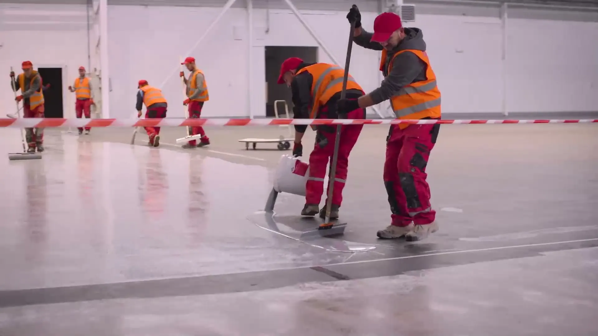
Od 1998 roku · Sędziszów Małopolski i cała Polska
Posadzki żywiczne i hydroizolacje dla przemysłu, garaży i balkonów
Wykonujemy posadzki epoksydowe i poliuretanowe, kamienny dywan oraz powłoki chemoodporne i hydroizolacyjne. Wszystkie prace posadzkarskie prowadzą nasze własne ekipy, bez podwykonawców.
Pracujemy w systemach m.in. Sika, Sicon, BASF Ucrete i Deckshield
Co wykonujemy
Dobieramy system do obciążenia, chemii i ruchu, jaki posadzka ma wytrzymać, oraz do budżetu inwestora. Pracujemy na nowych obiektach i przy renowacji istniejących powłok.
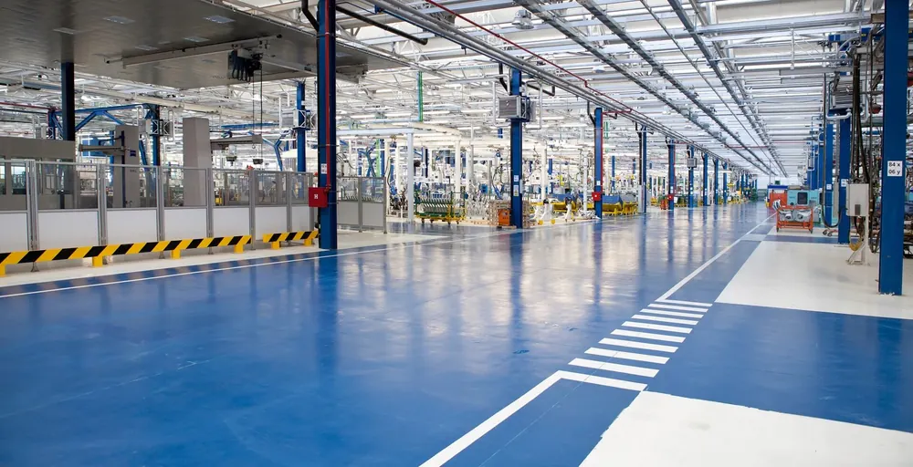
Przemysłowe posadzki żywiczne
Hale produkcyjne, magazyny, zakłady spożywcze i chemiczne. Posadzki odporne na kwasy, zasady, oleje i duży ruch wózków, bez łączeń, łatwe do utrzymania w czystości.
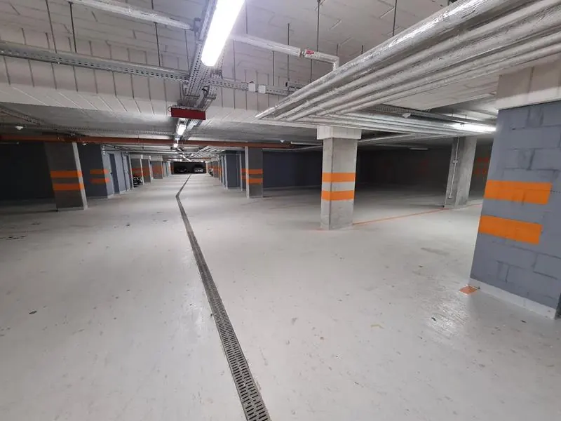
Garaże i parkingi podziemne
Posadzki epoksydowe i poliuretanowe w halach garażowych osiedli i biurowców, z oznakowaniem miejsc i ciągów.
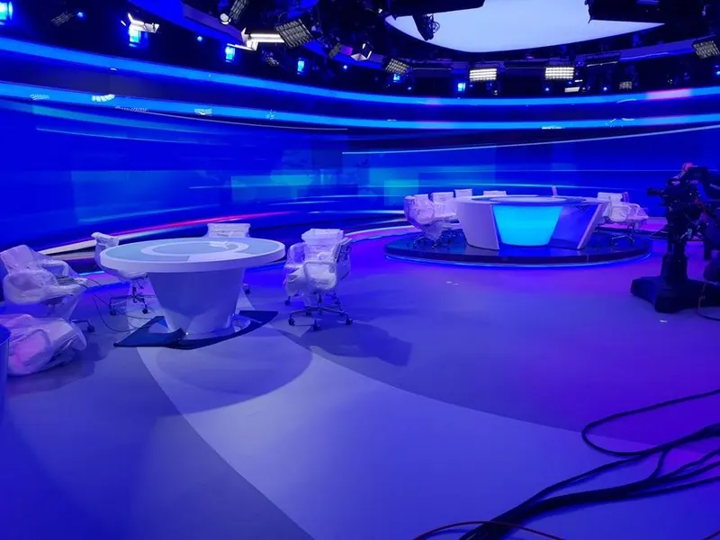
Dekoracyjne posadzki żywiczne
Biura, salony, hole, szkoły i szpitale. Gładka powierzchnia bez fug, szeroka gama kolorów, możliwa na ogrzewaniu podłogowym.
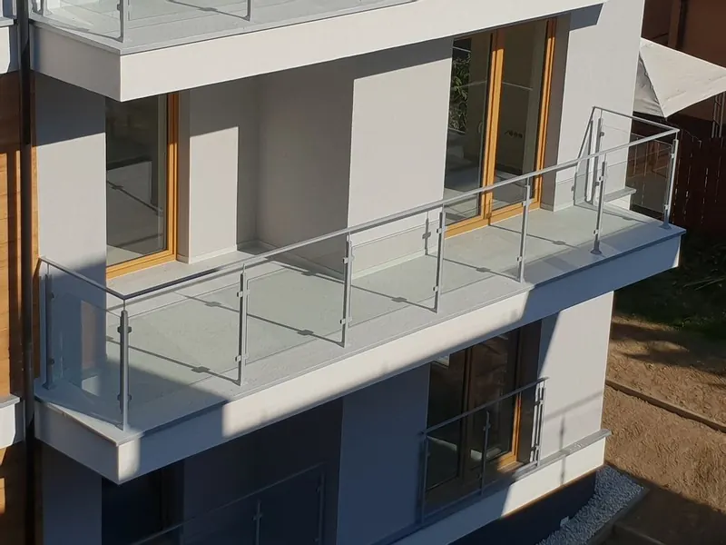
Balkony i tarasy
Hydroizolacja nowych i remont starych balkonów dla deweloperów, spółdzielni i osób prywatnych. Najpierw spadek, potem szczelna powłoka.
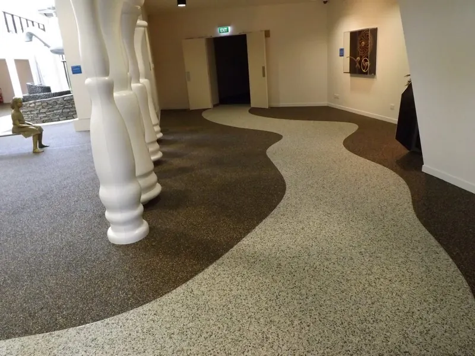
Kamienny dywan
Żywica epoksydowa z kruszywem kwarcowym, granitowym lub marmurowym. Antypoślizgowa, na tarasy, schody, podjazdy i do wnętrz.
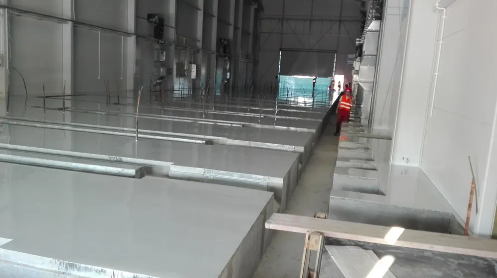
Zbiorniki i powłoki chemoodporne
Zbiorniki wody, baseny, oczyszczalnie, kanały spalin. Przygotowanie podłoża piaskowaniem i powłoka dobrana do obciążenia chemicznego.
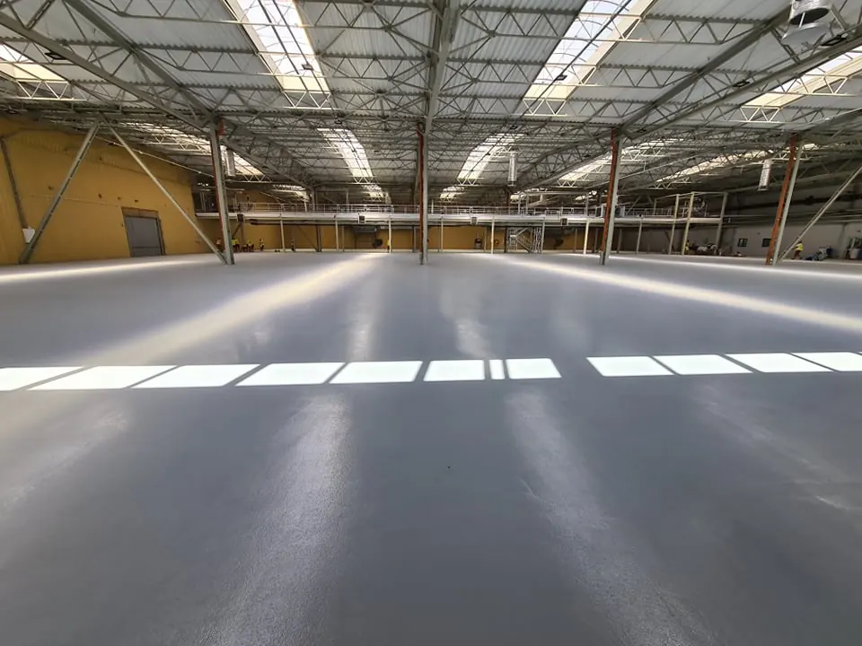
Naprawa i renowacja posadzek
Frezowanie, szlifowanie diamentowe i śrutowanie, usuwanie starych powłok i okładzin. Zużyta posadzka wraca do pracy w krótkim czasie.
Hydroizolacja dachów płaskich
Płynne membrany żywiczne nakładane na starą izolację, bez jej zrywania. Gwarancja systemowa 10, 15 lub 25 lat.
Polimocznik
Wodoszczelna, antypoślizgowa powłoka na posadzki, baseny, zbiorniki i rury narażone na korozję.
Posadzki antyelektrostatyczne
Do przepompowni, rozdzielni i pomieszczeń z elektroniką, m.in. w przepompowni gazu PGNiG w Brzeźnicy.
Polerowanie betonu
Gładka lub porowata faktura posadzki betonowej w magazynie, na parkingu, w biurze lub w domu.
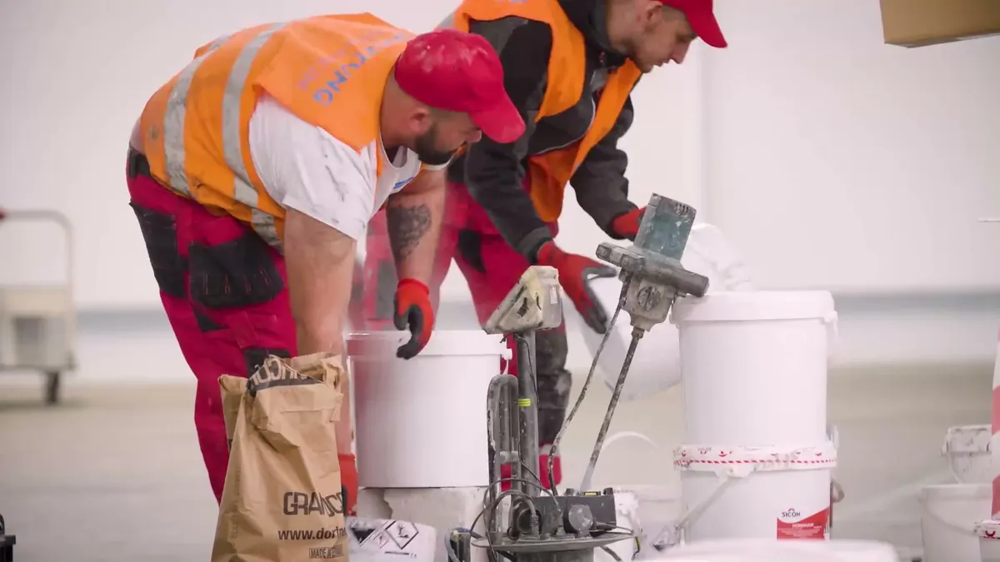
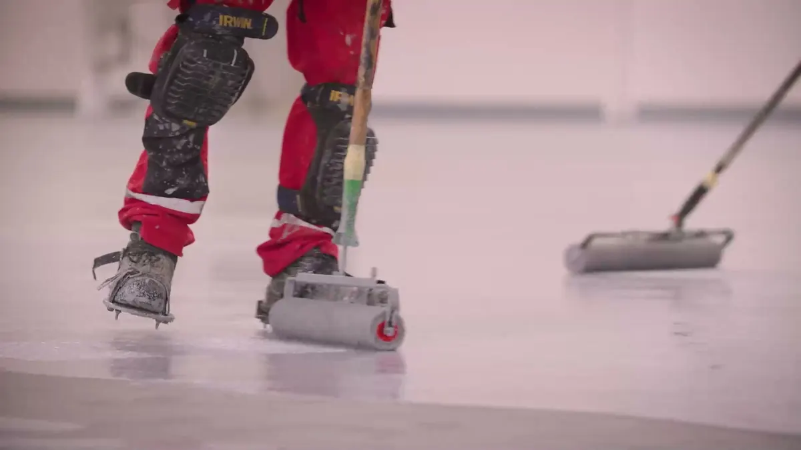
Jedna firma od podłoża do ostatniej warstwy
Wszystkie zadania przy posadzce wykonujemy we własnym zakresie. Dzięki temu odpowiadamy za całość: przygotowanie podłoża, gruntowanie, warstwy zasadnicze, wykończenie i terminy.
- System dobieramy do przyszłego obciążenia posadzki: ruchu wózków, chemii, temperatury i wymagań higienicznych.
- Współpracujemy bezpośrednio z producentami systemów posadzkowych, a nasi pracownicy przechodzą ich szkolenia.
- Doradzamy, jak dopasować posadzkę do możliwości finansowych inwestora, bez rezygnowania z wymagań technicznych.
Wybrane realizacje
Pracowaliśmy w zakładach produkcyjnych, rozdzielniach energetycznych, studiach telewizyjnych, garażach osiedli i na balkonach wielu osiedli. Poniżej kilka obiektów z naszej listy.
Przesuń w bok, aby zobaczyć kolejne realizacje.
Pracowaliśmy m.in. dla
Budimex · Skanska · Strabag · Mostostal · Erbud · Awbud · Unibep · CFE Polska · PGE · Telewizja Polska · FIAT · BorgWarner · Polpharma · Olimp · Konspol · Szerbud
Pełna lista obejmuje m.in. rozdzielnie 400 kV w Skawinie i Polkowicach, zakłady Sokołów w Dębicy (Ucrete BASF), CHEMAR w Kielcach, Centrum Kongresowe w Pałacu Kultury i Nauki, 860 balkonów na osiedlu Ozon w Krakowie.
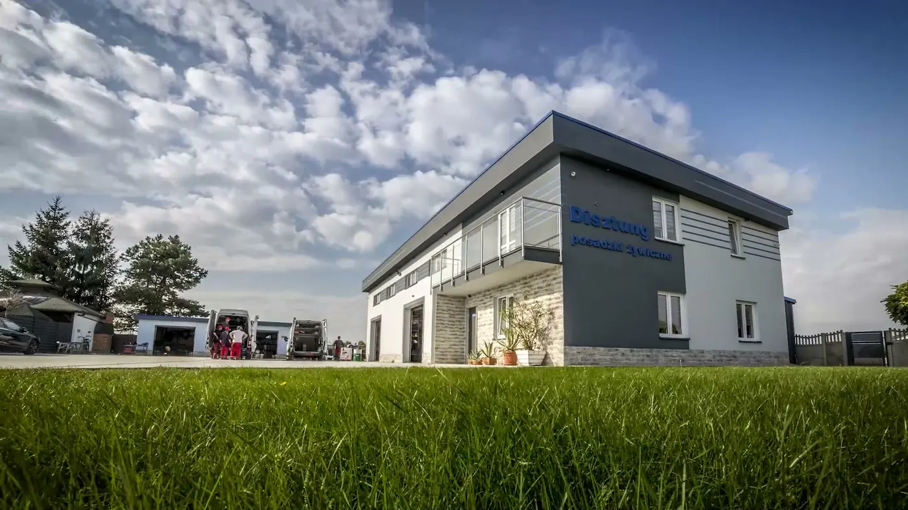
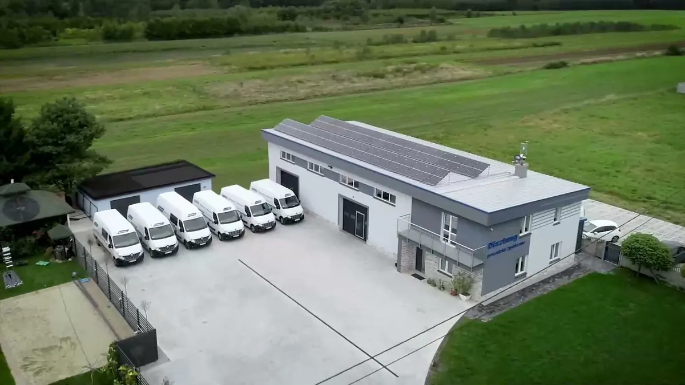
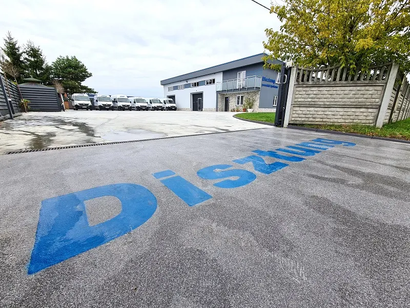
Firma z Sędziszowa Małopolskiego, pracujemy w całej Polsce
Disztung działa od 1998 roku. Zajmujemy się hydroizolacją balkonów, zbiorników i dachów płaskich przy użyciu żywic oraz przemysłowymi i dekoracyjnymi posadzkami żywicznymi. Pracujemy dla generalnych wykonawców, deweloperów, spółdzielni mieszkaniowych, zakładów produkcyjnych i klientów indywidualnych.
Z siedziby przy ul. Solidarności 9 wyjeżdżają nasze ekipy i sprzęt do obiektów mieszkaniowych, handlowych, produkcyjnych, sportowych i użyteczności publicznej.
- Firma
- Disztung Sp. z o.o. Sp.k.
- NIP
- 818-172-64-71
- KRS
- 0000832104
- REGON
- 385710335
Referencje i szkolenia
Listy referencyjne od inwestorów i wykonawców oraz zaświadczenia producentów systemów, z którymi pracujemy. Kliknij, aby powiększyć.
Wycena posadzki lub hydroizolacji
Napisz, jaki to obiekt, ile ma metrów i do czego ma służyć posadzka. Oddzwonimy, a jeśli trzeba, przyjedziemy obejrzeć podłoże.
- Telefon791 339 022698 295 661
- E-mailbiuro@disztung.com
- Adresul. Solidarności 9
39-120 Sędziszów Małopolski - Godzinyponiedziałek - piątek, 7:00 - 17:00